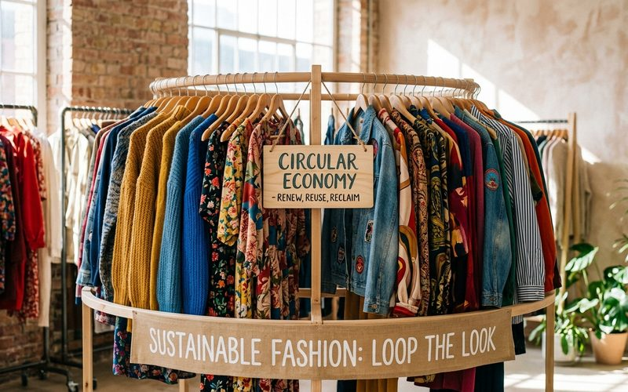
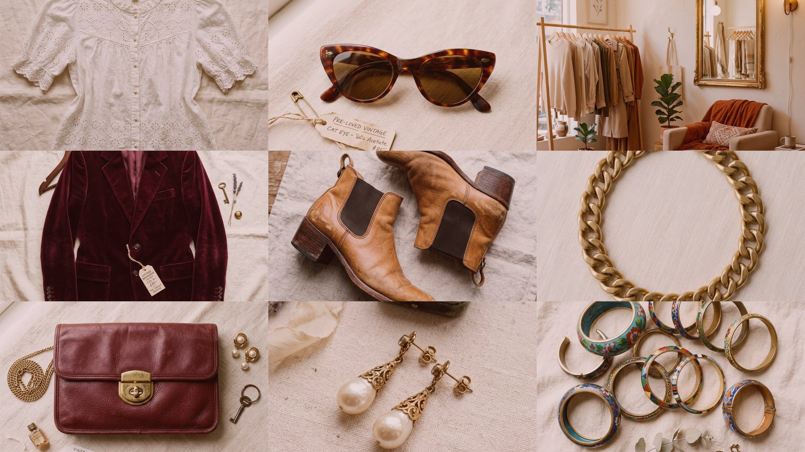
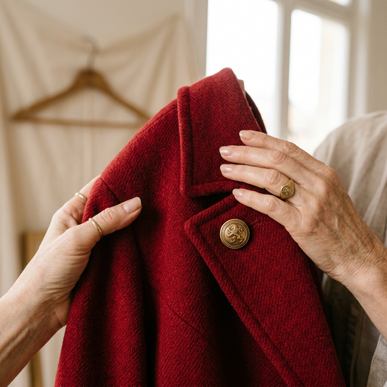
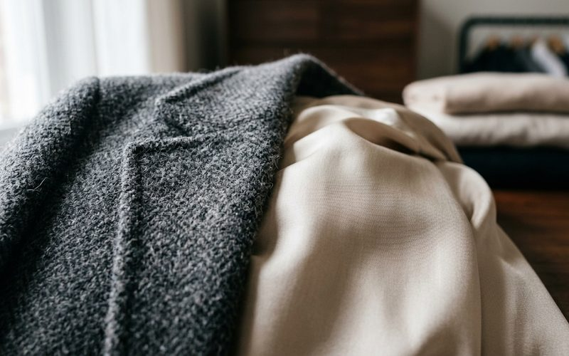
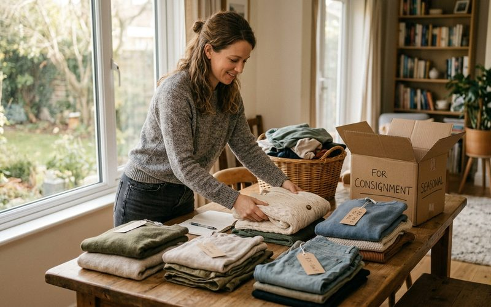
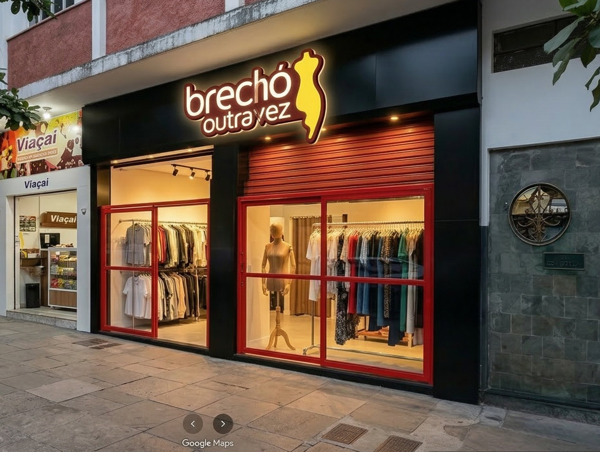
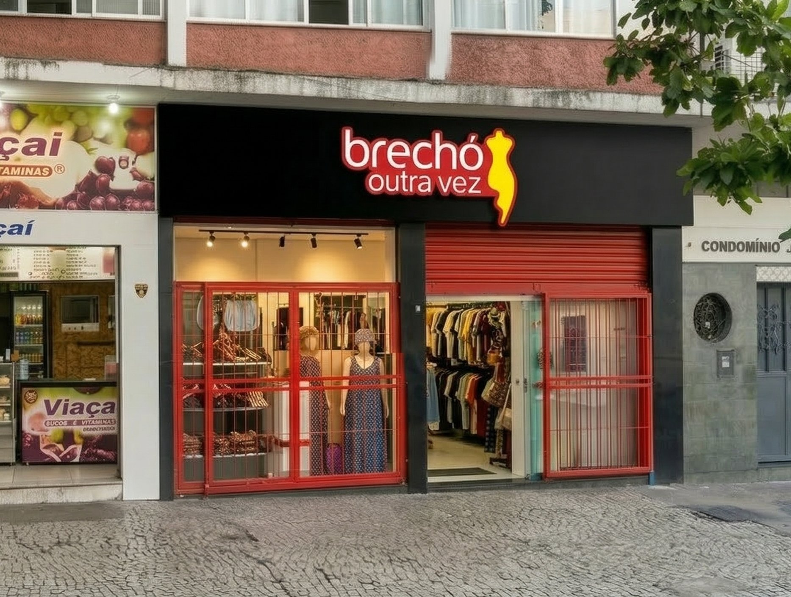
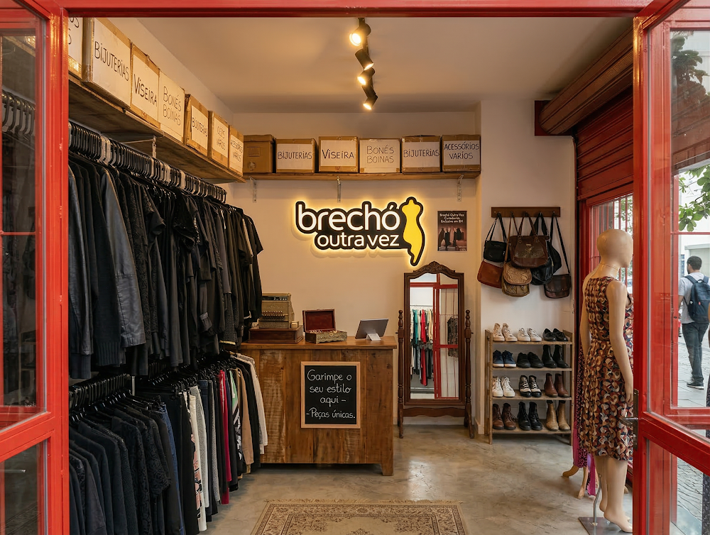
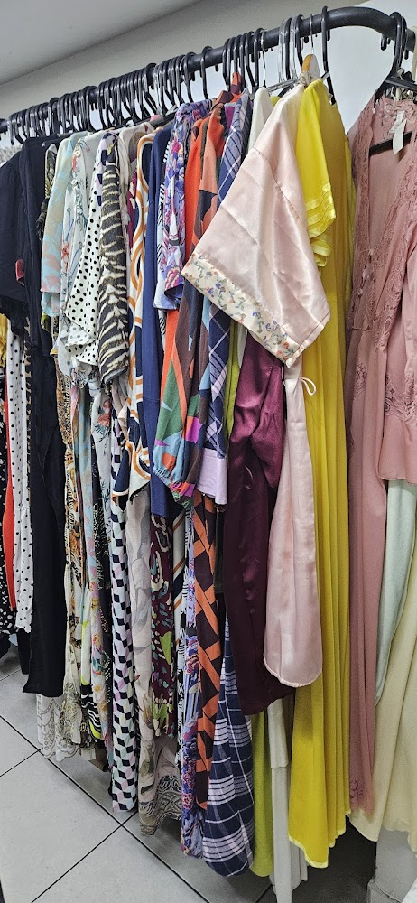

Por que investir em moda circular hoje?
Descubra como o consumo consciente revoluciona não só o seu estilo, mas o planeta.
Ler mais →
Desde 2007
Curadoria feminina no coração da Savassi, BH. Encontre peças de alta qualidade e estilo único em nosso brechó focado em moda sustentável.

O Brechó Outra Vez é referência em roupas de segunda mão e moda sustentável na Savassi, Belo Horizonte. Cada peça que chega ao nosso acervo passa por uma curadoria rigorosa — selecionamos apenas qualidade real: tecidos premium, modelagens atemporais e estado impecável.
Atendemos mulheres exigentes que buscam estilo com consciência e preços justos. Aqui, você vive a experiência inesquecível de encontrar tesouros únicos: roupas femininas, bolsas de grife, sapatos e acessórios vintage, tudo a partir de um valor muito acessível.
Também trabalhamos com consignação 50/50. Tem roupas boas paradas no armário? A gente encontra uma nova dona pra elas.
Agendar consignação: 3324-3383Explore nossas matérias sobre moda sustentável, estilo vintage, dicas de garimpo e muito mais.

Descubra como o consumo consciente revoluciona não só o seu estilo, mas o planeta.
Ler mais →
Seda, linho, algodão... aprenda a olhar a etiqueta e o toque para fazer grandes achados.
Ler mais →
O que vale a pena desapegar? Como preparar as roupas para o nosso brechó em BH.
Ler mais →Visite nossa loja física na Savassi, BH, ou ligue para nós. Experimente peças únicas, escolhidas a dedo para você. Itens selecionados a partir de R$ 10, com garimpo fácil e rápido.
Transforme as roupas paradas no seu armário em dinheiro. Somos o melhor ponto de consignação de roupas na Savassi! Você traz, nós vendemos, e você recebe sua parte. Aceitamos roupas femininas limpas, em bom estado, e sapatos. Agende pelo telefone.
Aderir à moda circular é dar trégua ao consumismo fast-fashion. Menos lixo têxtil, mais economia no bolso e um look com personalidade. Pratique a moda sustentável em BH conosco.
Consignação não é só um processo — é um ato de carinho. Você entrega, a gente cuida, e quando a peça encontra uma nova dona, você recebe sua parte.
Venha até a loja de segunda a sexta, das 10h às 18h, ou sábado das 10h às 13h. Traga as peças que você quer consignar — roupas, bolsas, sapatos e acessórios.
Avaliamos qualidade do tecido, estado de conservação e valor de mercado. Não exigimos marca famosa — o critério é qualidade. O que não entra hoje, devolvemos na hora.
Chegamos a um preço justo baseado no valor de mercado e no estado da peça. A peça fica na loja por até 90 dias. Se não vender nesse prazo, você retira ou decide o que fazer.
Quando a peça encontra uma nova dona, você recebe o valor combinado — em até 7 dias úteis. Sem complicação, sem burocracia.
Sim, é fundamental agendar antes pelo telefone (31) 3324-3383 para combinar a avaliação, onde analisaremos as peças. Venha na loja durante o horário de funcionamento: seg-sex das 10h às 18h e sábado das 10h às 13h. Para grandes volumes de peças, uma consulta prévia pelo WhatsApp pode agilizar o processo.
Sim. Se a peça não vender dentro do prazo de 90 dias, você pode retirá-la na loja. Entramos em contato para combinar a retirada. A decisão final sobre o que fazer com a peça é sempre sua.
Trabalhamos principalmente com consignação — isso garante que você seja recompensada pelo valor das suas peças. Para doações, recomendamos entidades sociais ou bazares beneficentes da região.
Depende da peça, da estação e da demanda. Algumas peças vendem na primeira semana; outras levam mais tempo. O prazo máximo na loja é de 90 dias. Peças com boa qualidade e preço justo tendem a circular mais rápido.
Não. Não exigimos nota fiscal para consignação. Avaliamos a peça pelo que ela é — qualidade, estado e valor de mercado. Trazendo sua peça, a gente analisa e te diz se entra ou não.
Ou venha direto na loja — seg-sex 10h-18h · sáb 10h-13h
Av. do Contorno, 5690 — Loja B
Savassi, Belo Horizonte — MG
CEP 30110-036




Visite-nos no Savassi e faça parte dessa história.